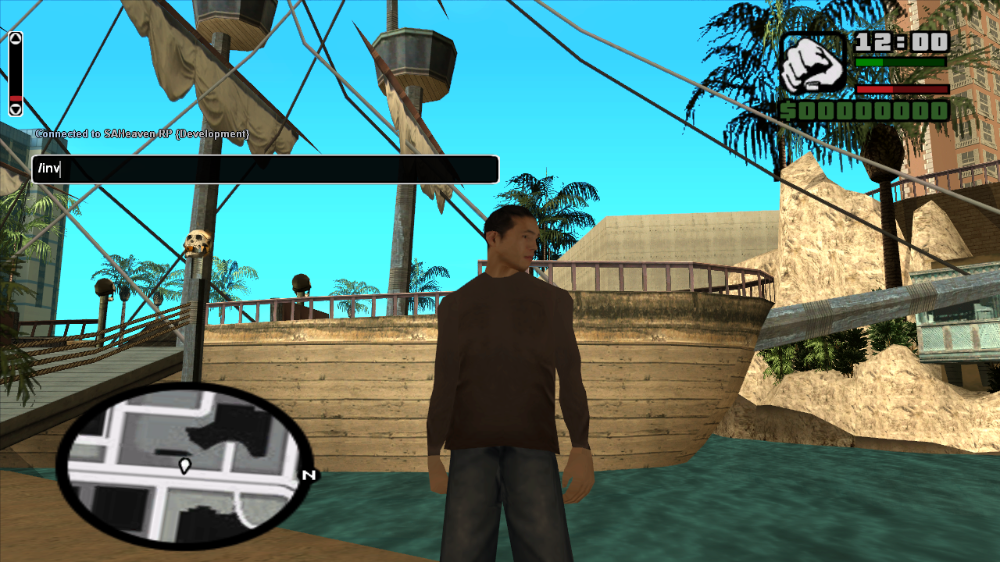
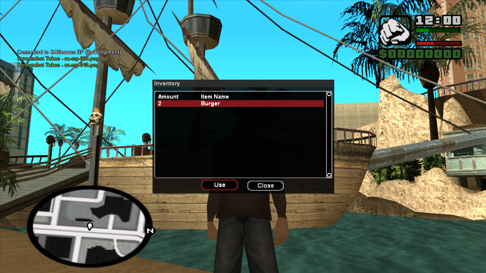
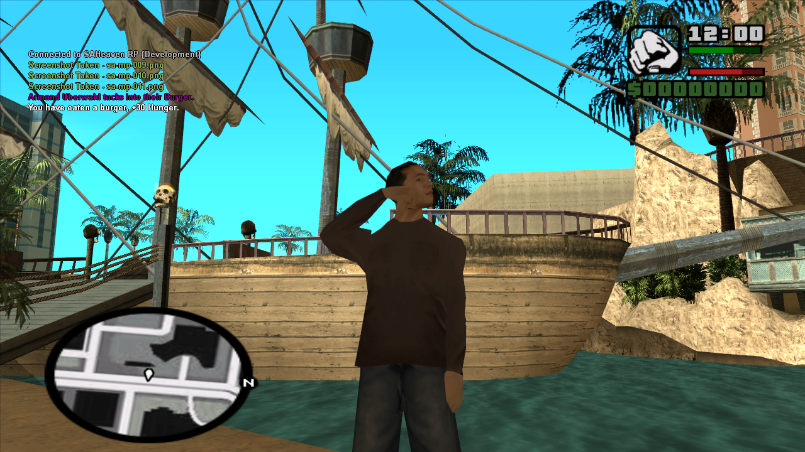
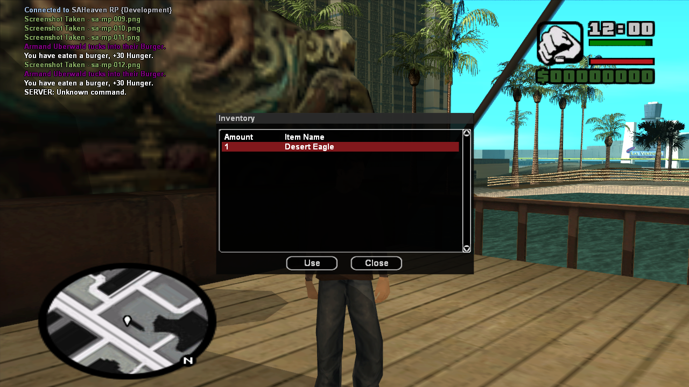
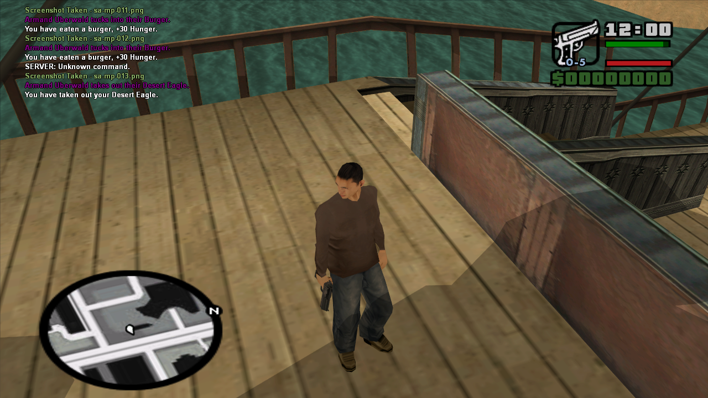
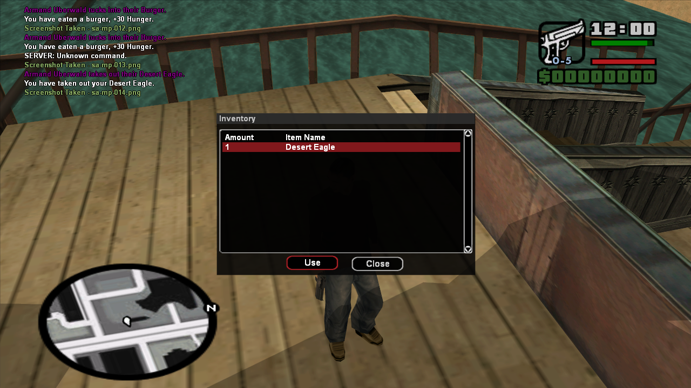
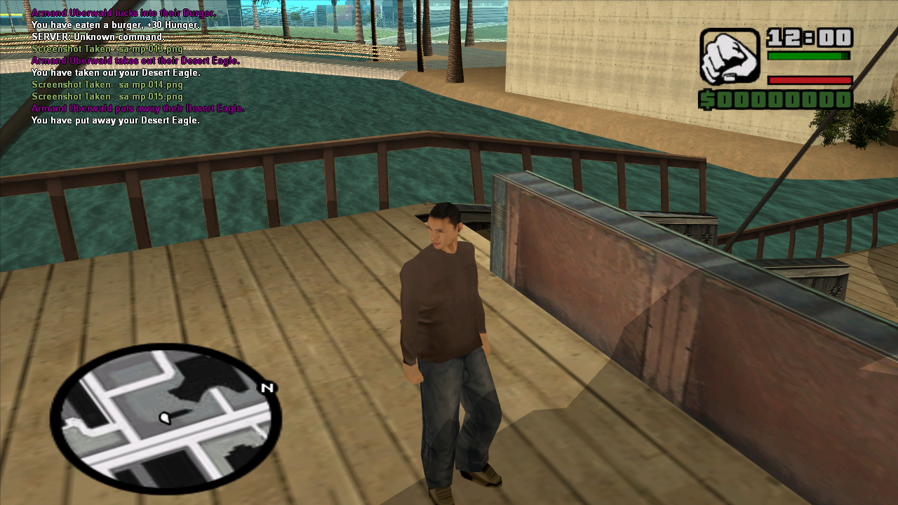
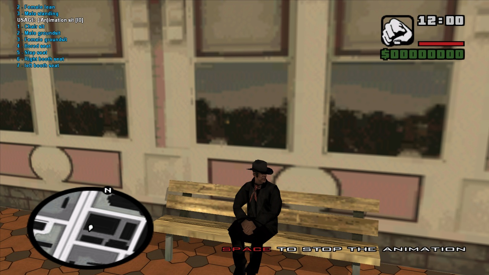

SAHeaven RP Development Blog
SAHeaven Roleplay (SAH:RP) is a gamemode script written in PAWN for the multiplayer mod San Andreas Multi Player (SAMP). This is an all new game mode written by Ben Cherrington * with a major focus on Roleplay elements such as emotes, animations, jobs, food, houses, business, shops, inventory, government and more.
30/01/2013
c294352b31
A working hunger system has been added, including a visual hunger bar located above the health bar on the players HUD. This system needs some work done to it, but it's a start. I've also added some more animations and completed the core of the animation system. This can now be used with any other command or action in the gamemode.
So far I have tied the act of eating a burger to the eating animation (seen in a screenshot below). The final function to be added today is the inventory system, although basic it allows for a great deal of improvement. Right now the players inventory is stored in a new file and the script simply looks for the item name to use it.
A basic weapons system has been added to this system that allows for a player to draw a weapon from their inventory and place it away again with ease. Food can also be consumed from the inventory which trigeres the animation I mentioned before.
Here are some example screenshots of these systems in action.       60c7e02
I'm currently adding a full animation system that will flesh out the roleplay elements allowing players to perform a range of emotions. Example: 
30/01/2013
The development blog has been launched. This blog will be updated regularly as new features are added. The base of the gamemode is working, basic chat commands have been added, a login system, player data storage, position saving, and more.